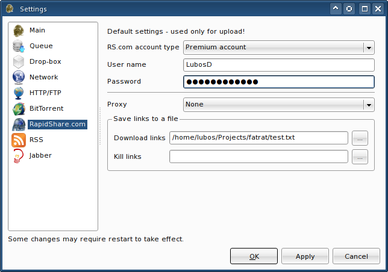

|
RapidShare.com uploads |
Enter your account's information into Settings - RapidShare.com (not applicable to unregistered users). Whenever you upload a file, the related download (and possibly kill) link can be found in transfer's log. This may not be very comfortable to use, therefore in the settings dialog you can specify a text file where links are to be saved. Note that kill links are generated for anonymous uploads only.

Since the upload is performed by sending chunks of the file, uploads can be resumed. However, the data of the last (incomplete) chunk have to be uploaded again.
Copyright © 2006-2008 Luboš Doležel